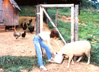

Raising small livestock-from babes to butchering age-is no more difficult than cultivating a garden . . . and many types can be reared even in areas as limited as a large back yard or urban lot. However, choosing the animals that'll best suit your needs is crucial to smallspace meat production.
And, although economy is obviously important, other factors are bound to influence your choices, as well. The chart that accompanies this article lists some basic aspects of livestock raising-such as initial cost of the animals, housing needs, feeding requirements, and expected harvest-that must be considered in selecting your stock . . . and I'll discuss some of the individual advantages and disadvantages of what I consider the five best backyard critters. These comparisons ought to help you make the final decision as to what you'd like to raise.
REGARDING REGULATIONS
First of all, I should say a few words about regulations . . . name ly, be sure to check local restrictions and laws regarding the types and number of animals that may be kept before you build any pens, butches, coops, or sties. In many well-populated areas such regulations are very specific, limiting the number of animals per household and requiring that shelters be placed a specified distance from adjacent property lines. So save yourself annoyance and extra work by checking the rules before you build or buy.
Of course, even if there are no detailed livestock laws where you live, you should strive to keep noise, odors, and flies from becoming nuisances to your neighbors. Indeed, if you live in an area where back yards tend to be small, you'll pretty much have to make your prospective project's effects on others a prime consideration when choosing your homestead critters.
NO "MOO"
As you read on, you'll soon notice that I've limited this analysis to rabbits, chickens, sheep, goats, and pigs . . . and left out the most popular mainstay of the American barnyard: the cow. The reason for that omission is the fact that although a beef or dairy cow could probably be kept in a very large back yard, Bossy poses many more problems than do other domestic animals for the limited-space meat producer.
For one thing, a cow's contribution to the manure pile can be pretty sizable. Bovine animals also require quite sturdy fencing, and butchering one of the critters demands a great deal of help and effort (while the 500 to 600 pounds of beef thus harvested will stuff a freezer so full that you'll have no room left for other foods). Last but not least, cows need considerable grazing room-at the least, an acre of lush pasture-which is more land than many homesteaders can spare.
I've also omitted varieties of fowl other than chickens. Actually, many kinds of poultry-such as geese, guinea fowl, ducks, quail, and pheasant-can easily be raised in back yards . . . but there are too many species of winged livestock to cover in this article, so I've focused on the most popular one.
OK, that's enough of prefatory remarks. Let's get on to the meat of the article!
RABBITS
Quiet, clean, and prolific, rabbits are the most nearly ideal animal to raise in a small space. If they're kept in all-wire hutches and the manure is cleaned out regularly from under their cages, the furry mammals are odor-free and won't attract flies. Rabbits also give an excellent return for the amount of feed and labor invested. The litters from one ten-pound doe-kept in a 30" by 36" hutch-can yield up to 80 pounds of meat a year! In addition, the pelts-although generally not strong enough for clothing-can be used (or sold) for trim on coats.
But in spite of all the good things to be said about rabbit raising, the species does have one serious disadvantage. The gentle creatures are quite predator-prone, so unless you build your butches or fences strong enough to keep prowlers out (or enclose your rabbits in a shed or garage), your stock will be easy prey.
CHICKENS
The most popular barnyard birds can be highly efficient meat or egg producers. A broiler, for instance, proves its weight-gaining efficiency by yielding nearly a pound of meat for every two pounds of feed. Moreover, a good egg-laying hen'll supply about a dozen eggs for every five pounds of feed. And certain dual-purpose breeds will actually give a fair supply of both products!
Chickens are also good foragers: They'll eat everything from meat scraps and bugs to weeds and kitchen leftovers. Of course, that same quality can prove devastating to a garden, so guard your crops against disaster by fencing in either the vegetables or the birds!
Like rabbits, the fowls are well suited to a small-space operation. Stout fences aren't required (the appropriately named chicken wire is usually the least expensive and easiest enclosure material to use). The birds will, however, learn to fly over five- or six-foot barriers . . so you must either fence over the top of their pen or clip their wings to keep them earthbound. In addition, predators may well try to raid your flock, so be sure your coop's fencing and flooring arc at least strong enough to deter rats, owls, coons, opossums, and canine prowlers.
I should also forewarn you that chicken coops in a "citified" neighborhood tend to cause more human commotion than does the appearance of a few rabbit butches. Neighbors are often concerned-and perhaps rightfully so-that the birds will get loose and dig up their prize petunias . . . that the flock will create odor and fly problems . . . or that you'll decide to keep a rooster, which would force them to put up with a living alarm clock! Although these difficulties can be prevented by proper management, you might be wise to sound out the folks next door and prepare them for their new neighbors . . . your chickens. (The promise of an occasional gift of fresh eggs might be one good way to make the introduction!)
SHEEP
Calm, quiet, almost odor-free, and easy to keep penned, sheep are a good addition to nearly any meat-producing homestead, especially rural households: pith an acre or so of unused pasture. Sheep are ex cellent grazers: They can be raised entirely on good grassland (in season) without supplemental grain. When pastured exclusively, they're probably the most economical critter to raise on your back yard farm. You can harvest about 100 pounds of meat and 8 pounds of wool from each adult ewe . . . and an acre of lush pasture will support four or five of the animals and their lambs. (Some Euro pean breeds, by the way, are raised for milk in addition to meat and wool.)
The woolly creatures don't require much regular caretaking, either. They do need to be shorn every year, however, and this can be a problem for the backyard homesteader. Shearing must be done correctly if it's to produce a quality fleece for spinning, and few smallflock owners have the time to learn the skill . . . or the money to buy the expensive equipment. Since it may be difficult to find a professional shearer who's willing to work on just a few animals, you should contact-in winter, well before the shearing season begins-someone who shears larger flocks in your area and arrange to have your sheep included in that person's rounds.
Labor requirements for your backyard flock can also be high at lambing time. Ewes will need to be watched (and assisted, if necessary) to be certain they care for their lambs properly, and you'll have to guard the timid creatures constantly against predators.
Overall, though sheep require less daily maintenance than do either rabbits or chickens, raising them demands more livestock husbandry skills than managing those smaller species. The pasture, for instance, must be managed to prevent overgrazing, and your flock will require a good veterinary care program.
GOATS
Perhaps the most intelligent-and certainly the most companionable-of backyard livestock animals, goats are highly efficient milk producers and good friends to have around the homestead.
A good doe will yield a gallon of milk each day from a feeding of three to four pounds of grain and a few pounds of hay (the latter helps keep her rumen-part of the animal's digestive system-healthy). Goat's milk tastes similar to cow's milk, yet many folks who can't drink Bossy's best can tolerate the smaller creature's givings. Then, too, although the popular breeds in this country are not usually raised for meat production, caprine meat (called chevon) is delicious . . . and tanned hides from the animals can be used for rugs, vests, jackets, and other garments.
For all these reasons, many new homesteaders think a goat is the first animal they should have for their farms . . . especially after they've had a chance to play with one. But before you run out to purchase your own mid-sized milker, it's best to be aware of the disadvantages of keeping the beasts. First off, a dairy goat must be milked twice a day, seven days a week, through her entire tenmonth lactation period . . . a caretaking requirement many homesteaders might find too confining. What's more, although goats don't require much space, they are difficult to keep penned . . . and in addition to their fence-attacking tendencies, some of the little bleaters are pretty good noisemakers. (Neither of these last two qualities will endear you or your goats to the neighbors next door.)
And bucks are another matter entirely. During fall breeding season, the male of the species will spew his odor far and wide, letting people for blocks around know there is a billy goat in the area. This isn't an ordinary country smell we're talking about . . . it's foul, rank, and-to some folks-even nauseating. So if you're thinking of getting into the goat-breeding business, plan to live far away from the nearest human nose . . . or, perhaps, talk some farmer friend into keeping your buck for you.
If you intend to get the most (and most economical) milk production from your goat-or any dairy animal, for that matter-you must have a good understanding of its nutritional needs during lactation and dry periods, and provide good veterinary care. You should know, too, that the tiny fat droplets in goat's milk-unlike those of cow's milk-are mixed throughout the liquid. The butterfat thus doesn't rise naturally to the top (it can be separated mechanically), which means that making butter or cheese is a bit difficult.
Probably the hardest aspect of goat raising, though, is culling a favorite doe-no matter how poor her milk production is-because the creatures are so lovable to have around. And it you're not will ing to "harvest" your caprine companions, it won't be long before one cute doe-at two or three kids per year-multiplies into a yardful of bleaters that need to be milked and fed . . . twice a day, seven days a week.
PIGS
Among the best waste-to-meat converters, pigs will turn kitchen scraps, garden greens, grains, roots, surplus eggs, or offal from other butchered livestock into hams, pork chops, bacon, and fresh side meat. In other words, a swine can be the finest garbage disposal available. (Alternatively, when fed a well-balanced store-bought diet, a good hog will gain a pound for every 2-1/2 to 3-1/2 pounds of feed.)
Porkers don't require much room . . . you can raise one or two from weanling to market weight in a pen 16 feet square. (Note that for backyard meat production, pigs should be purchased as weanlings in the spring and raised through the summer to their market weight of about 220 pounds each. Using this method, you'll avoid the considerable husbandry problems associated with handling newborns, piglets, and those 400- to 500-pound boars and sows.) And all you'll have to do until butchering time is feed and water your stock twice a day . . . and clean out the manure as often as your compost pile needs it or your nose tells you to.
Most pigs are not jumpers, but they will try the best of fences at ground level, so your enclosures must be absolutely "swine tight" at the bottom. I've found that commercial hog panels-each of which consists of 16 feet of 32"-high welded wire-are just about the ideal fencing for a backyard pigpen.
Along with the tendency of porcine critters to root their way out of captivity, pig raising has other drawbacks, such as the work involved in butchering a 200-pound hog . . . and even the problem of trying to find room for 100 pounds of meat in your freezer. But the biggest disadvantage to these otherwise excellent meatmakers is the public's general reaction to "essence de hog", so you absolutely must consider your neighbors' olfactory tolerances before you set up a pork factory behind your house.
TAKE YOUR PICK
I've tried to outline some of the objective pluses and minuses of each of the five best mini-farm animals . . . but don't forget that one of your chief considerations should be your personal preference. The homesteader who really enjoys his or her critters will give them more care and attention . . . and the animals will, in turn, be more comfortable and therefore more productive. So if, for example, you like the soft clucks of a flock of chickens but find the thought of raising pigs disgusting, don't let cold economics alone determine your choice.
After all, the caretaker who delights in his or her backyard wards is usually the one with a successful, highly productive mini-farm livestock operation.
EDITOR'S NOTE: Randy Kidd's articles about basic husbandry for each of these five livestock species appeared in the following issues of MOTHER: "Ten Commandments for Raising Healthy Rabbits" (No. 61, page 80) . . . "Ten Commandments for Raising Healthy Chickens" (No. 67, page 96 and No. 68, page 94) . . . "Ten Commandments for Raising Healthy Sheep" (No. 60, page 162) . . . "How to Raise Healthy Goats" (No. 65, page 74) . . . "How to Raise Healthy Pigs" (No. 63, page 88). Turn to page 48 to order back issues.
More detailed how-to help can be found in the following texts: Rabbits the Modern Way ($5.95), Raising Poultry the Modern Way ($6.95), Raising Sheep the Modern Way ($6.95), Raising Milk Goats the Modern Way ($5.95), Raising the Homestead Hog ($11.95). These books are available for their list prices-plus 951 shipping an," handling on one or two titles or $2.00 on orders of three or more books from Mother's Bookshelf', 105 Stoney Mountain Road, Henderson vine, North Carolina 28791.
ANIMAL HUSBANDRY
Good animal husbandry, the mainstay of any well-managed livestock operation, can also save feed costs and improve production.
Perhaps the easiest animal with which to demonstrate what a dramatic difference good caretaking practices can make is the backyard bunny. We'll take two examples. For the first, let's suppose that we're keeping two does and a buck rabbit. If we feed the craters a diet entirely composed of rabbit pellets, each of these ten-pound animals will consume about 120 pounds of pellets each year. The does, though, will steed an extra four to five pounds of pellets during pregnancy and nursing . . . so if our two does each have three litters, we'll buy an extra 24 to 30 pounds of pellets er year for the mother rabbits.
A bunny gains a pound of weight for each two to three pounds of pellets consumed. Therefore, if each doe averages five babies per litter, we'll haze 30 bunnies a year . . . requiring 240 to 360 pounds of pellets to bring them all to butcher weight of four pounds.
We'll harvest about two pounds of meat front each four-pound rabbit. The bottom line, then is that it will take 5.2 to 6.25 pounds of pellets for each live pound of rabbit produced . . . and 10.4 to 12.5 pounds of pellets for each pound of rabbit meat nn our dinner ruble.
Now, let's examine an ideally managed rabbitry. Such a setup will contain ten does for each buck (the optimum ratio). What's more, each doe will have five litters per year (the number commercial rabbitries strive for) instead of three, and the litters will average eight offspring each. That will cut arts investment per live pound of rabbit from 5.6-6.25 pounds of pellets to 2.95-3.98 . . . almost in half.
How can one make such a drastic reduction in feed (and therefore in costs)? First off, select rabbits that are good breeders and then choose your replacement does front large litters (thus improving the average number of offspring produced). A ratio of one buck for ten does-instead of two-will further improve the proportion of feed to harvested meat. Then, to achieve five-or even six-litters per year instead of three, wean the bunnies at four to six weeks of age (rather than waiting until they're eight or tent weeks old), and work at keeping the does bred.
As you can see, them, basic good husbandry practices-taking advantage of the critter's natural cycles, and selecting and keeping the best "doers" while culling the "do-nothings"-can double the costeffectiveness of our rabbitry.
BUYING YOUR ANIMALS
When looking at the price tag of any livestock, you'll need to consider the potential return on your investment . . . that is, how much meat, milk, eggs, or other products you'll be able to harvest for the amount of cash, food, and labor put into raising the animal.
Four basic factors will help you estimate an animal's cast in relation to its productivity: quality, age, pedigree, and popularity.
QUALITY
The best way to evaluate an animal's quality is by its post production records. However, not everyone keeps accurate livestock records and young animals won't have any records, of course . . . so you'll have to learn how to distinguish (using your eyeballs and fingertips) the likely producers from the do-nothings.
All animal breeds have established standards of perfection" that describe a quality specimen. The closer an animal is to the breed's standard, the better its production is likely to be. Perhaps the best place to learn haze to recognise such criteria is at the county fair. You can get a lot of practice there by matching your "winning" choices against the judge's decisions.
AGE
The price of any homestead livestock creature should reflect its age and its remaining years of productivity. For example, a one-year-old milk goat that's just beginning her production years should be worth more than a doe that's six or eight years old and starting to decline. (Actually, a two-year-old doe with a year of good production records will be the nasal expensive investment, because such a female is both young and proven.)
PEDIGREE
Family background will help you predict how well a critter r evil! produce, because chances are an animal from high-producing parents will follow the pattern. But good heritage doesn't guarantee good results . . . there are some "black sheep" (nanproducers) in every family.
Special terms are used to describe pedigree. A crossbred critter is an animal of unknown parentage or one whose parents are of different breeds. (Shepherds sometimes call crossbred sheep commercials and goat raisers often refer to such kids as grades.) If an animal boasts parents of the same breed, it is known as purebred. Most commercial livestock raisers, though, insist that the parents and grandparents all be of the same breed before they'll dub a youngster a purebred. What's more, owners who cart prove that their animals hove been pure for five generations or more usually list them in a breed club registry. Animals so honored are said to he registered.
The advantage of buying a registered animal is that considerable information is available about its ancestry. Livestock from a particular family, or line, that has a record of high production will obviously be in great demand . . . and fetch a high price.
POPULARITY
This last cost-determining factor may or may not have a direct relationship to an animal's quality. Certain breeds are more popular than others in specific areas . . . and naturally enough, the higher the demand far a particular breed, the more that livestock sells for. Nubian goats, for instance, are favorites in my part of Kansas, so I'd expect to pay a slight premium if I were to purchase a Nubian.
THE INEVETABLE END
This article would not he complete without at least a mention of what may be the hardest part of livestock raising . . .butchering the animals you've nurtured since birth. If you find you can't overcome such squeamishness, you may do well to limit your operation to milk-producing goats (you can sell their offspring) or egg-laying chickens.
But if you choose to go through with the process, you'll discover that butchering is not difficult once you learn the techniques. And harvesting your own meat certainly instills respect and a sense of responsibility for the animal that provided it . . . an attitude too often lacking in those folks who simply pick up their chops or drumsticks, neatly prepackaged in plastic wrap, at the grocery store.
|
 |
|
|